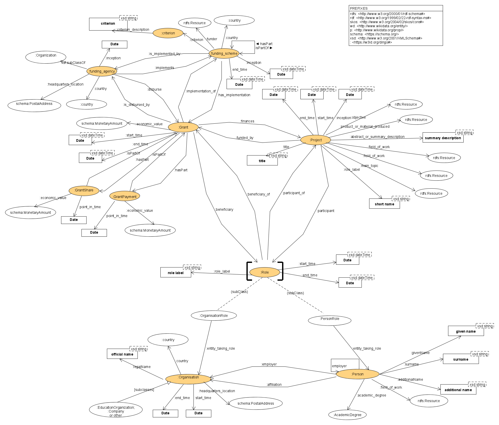

DINGO: a knowledge graph ontology for projects and grants
(with ontology mappings)
Current Editors: Diego Chialva
Past Editors, Contributors: Diego Chialva, Alexis-Michel Mugabushaka, Andra Waagmeester, Eric Prud'hommeaux, Thomas Baker, Dan Brickley, Katherine Thornton, Peter Murray-Rust, Mark Thompson
Status of this document
This document contains the specification of the ontology DINGO (Data Integration for Grant Ontology) in its latest form. The initial ontology by ERCEA was presented at the Meetup in Berlin on 17th-19th of June (WikiProject Wikidata for research), and discussed by a working group (whose members are now indicated as Past Editors and Contributors) including also members of schema.org and Dublin Core Metadata Initiative. The ontology was therefore immediately aligned with the Wikidata data model, schema.org and DublinCore. Later revisions have led to this final version of this document, which is maintained.
This document is a stable document and may be used as reference material or cited from another document. Its aim is to draw attention to the specification and to promote its widespread deployment. This enhances the functionality and interoperability of data dealing with research and/or other cultural activities, and their funding.
Introduction
Researchers, scholars, funding agencies, face increasing pressure to report on impact, quality and sustainability of research, other technical and cultural projects, as well as of funding policies and practices. Policy debates in fact revolve more and more on data-driven assessments of the research and /or cultural landscape.
Such analyses and assessments exhibit a series of specific aspects:
They require the collection and processing of a large amount of data coming from a number of different sources (for example, founding agencies databases, bibliographic sources, project archives and reports, research and cultural prizes, …).
The various data must be combined and processed together to make useful inferences. This at the moment is done, if ever, in isolation by each actor and on a ad-hoc basis, which limit the (re-)usability of data.
The data models informing analogous data coming from different (but equivalent) sources -such as two different funding agencies operating with similar programs- are not standardized, which poses high barriers to the automatising of linkage and re-use of data.
The format itself of data is often not standardized (several kind of repositories and information systems). The difficulty in merging data leads to a lack of interoperability.
The lack of analysis contextualisation and of comparison perspective between different realities in the research/cultural landscape due to the lack of interoperability and linkage between data limits the reach, insight and capacity of the analysis to inform strategic discussion.
Solutions to these problematic points would be beneficial to the whole interested community. This would require in primis
the definition of data models/ontologies applicable to a variety of realities and use cases, and the extensive linking of existing ones based on consensus
the adoption of technologies and standardization that are positioned toward interoperability and automatising.
In the past recent years a number of ontologies have been presented concerning some of the relevant aspects of the research, cultural and scholar world, such ontologies for publications such as SPAR and DC Terms, or patents, such as the US patent ontology. However, there has been limited work concerning the funding aspects (we discuss it briefly, to the best of our knowledge, in the section Relation with other ontologies, extensions and integrations of the model).
DINGO, the Data Integration and Extension for Grant Ontology, is an ontology expressly designed to provide an extensible interoperable framework for formally conceptualizing and expressing the relevant parts of the research/cultural landscape in relation to funding, such that they can easily be shared between different actors and platforms. It is conceived to have sufficient richness of expression to satisfy complex requirements (see sections Aims of the model and Relation with other ontologies, extensions and integrations of the model, while at the same time being simple enough to be of immediate use also for the simplest use cases.
We provide also concrete examples of its use here.General description and design decisions
The ontology presented here conceptualizes and represents part of the research/cultural landscape, with particular focus on the research/cultural activities and their funding.
We provide a graphical representation of the main parts of the ontology:

The model is based on the following simple principles and specific relevant design decisions:
the model distinguishes six principal classes: Project, Grant, Funding Agency, FundingScheme, Role, Person, Organisation, Criterion;
a Project is an organised endeavour (collective or individual) planned to reach a particular aim or achieve a result
a Grant is a disbursed fund paid to a recipient or beneficiary (a Participant) and the process for it
a Project may be funded by one or more Grants simultaneously or in sequence
a Grant may fund one or several Projects
Grants can be awarded to Person(s) or to Organisation(s), hence beneficiaries can be a Person or an Organisation
Projects can be participated by Person(s) or to Organisation(s), hence a participant, individuated by a Role, can be a Person or an Organisation
a participant (Person or Organisation) in a Project may not beneficiary of the Grant(s) funding the Project; accordingly, the model reflect that participants of Project and beneficiaries of Grant funding the same Project may be different
Funding Agencies are the organisations materially disbursing and administrating the Grant process, note that they are typically distinguished from ultimate funders, which are entities establishing the agencies and/or the funding resources, and which are modeled in DINGO via the dg:funder predicate (Example: the ERC is a funding agency that has been established and works for the ultimate funder European Commission, which provides its budget)
Funding Schemes are specifications of Grant coverage, Grant eligibility, Grant reimbursement rates, Grant specific criteria for funding, Grant population targets, and similar features; such feature specifications constitute the Criterion to award funds (Grants)
Funding Schemes may be sub-specifications of more general Funding schemes
Criteria can be of different nature, modeled in this ontology via different sub-classes, and multiple Criteria can coexist in a single FundingScheme
Aims of the model
The principal aim of the DINGO ontology is to provide a standardised description and format to share data between systems. The intended interoperability is both among systems curated/owned by different entities, and for data sharing between devices and platforms.
Special care has been devoted to minimize the efforts in applying/adopting the ontology by users. In particular, while the model has been created using Linked Data fundamentals, it is apt to different implementations, also of non-graph type, and thus it does not address specifically the optimization of graph inference and graph-based queries.
We would like to stress the practical aims that have molded such ontology. We also present specifications of such ontology for existing knowledge graphs (namely, Wikidata and Schema.org), to given the right consideration also to relevant implementation aspects. This has also allowed us to prepare a pilot example of such a knowledge graph.
Relation with other ontologies, extensions and integrations of the model
The ontology presented here conceptualizes and represents part of the research/cultural landscape, with particular focus on the research/cultural activities and their funding. It allows for and benefits from extensions with ontologies describing other specific aspects, such as for example the outputs or products of such research activities, which are not modeled by DINGO itself. Data models for those areas have been and are being developed (for example see FABIO concerning publications). Specularly, data models based on those ontologies can be integrated and extended via DINGO to cover also for funding information and data, by linking via the product_or_material_produced property defined by DINGO.
To our knowledge there are a few ontologies specifically about funding: FRAPO is part of the SPAR ontologies, and the ontology used in Springer Nature SciGraph). They are part of larger (collections of) ontologies aiming at categorizing scholarly data, such as publications and other similar outputs, rather than focusing exclusively on the funding and research landscape, and because of the tuning for those purposes, they have some specific limitations when modeling the knowledge area in question. For example the SciGraph one does not appear to distinguish the concept of "grant" as funding from that of "research project", which would not permit to easily model several existing funding practices and use cases (for instance projects with multiple grants, either co-occurring or in sequence). FRAPO instead lacks classes and properties allowing to conceptualise for relevant concepts such as "principal investigators" and others roles and entities in the research and funding area. Neither ontology, moreover, conceptualises the more policy-related aspects of the funding (such as the criteria for the funding, and/or for eligibility, the coverage of the funding instruments, and so on). Finally the CERIF model provides a huge vocabulary axed on research management, while it also does not conceptualise more policy-related aspects of funding. Finally, there is a part of schema.org that deals with funding and has been inspired by DINGO (issue 343 of the schema.org release of 2019-04-01).
Linking between these ontologies and the DINGO ontology have been and will be pursued. For instance, DINGO is already mapped, on overlapping concepts, to FRAPO, and, because of the fact that the Scigraph ontology uses the schema.org classes for funding conceptualisation, DINGO is already liked to that as well.
Notes about Wikidata and Schema mappings of DINGO
DINGO classes and properties have been mapped from the outset with the classes and properties in the Wikidata and Schema ontologies/data models. Concerning properties, only a subset of those defined by DINGO exist or are mappable to already existing properties in Wikidata and/or in Schema.org. We have therefore attempted to map the predicates defined by DINGO into the semantically closest possible ones1, trying to express the degree of matching via, for instance, the SKOS ontology (this, also beyond the part of schema.org that deals with funding and has been indeed inspired by DINGO). We recall indeed that the creation of new properties is an expensive community process both in Wikidata and in Schema.org, hence we have preferred to use already existing properties as much as possible to ease the mapping and interoperability of data modeled via DINGO and the Wikidata and Schema.org ontologies.
We also recall that Wikidata presents a data model where statements are reified, which allows to associate qualifiers and references to statements. These allows to 1) constrain (qualify) and 2) characterize sources and curators of statements, as well as making certain classes in our model (such as the Role class) less necessary and natural.
1. Sometimes the label of Wikidata properties and the label of DINGO's properties do not match even if their description does match. For instance, in the Wikidata graph the property P2769 is labelled
budget, but defined as
assigned monetary amount for a project, while we use the definition of the Oxford English Dictionary for budget, that is,
An estimate of income and expenditure for a set period of time. Hence Wikidata's “budget” in the context of grants is equivalent to DINGO's Grant dg:economic_value property. DINGO's Project property dg:budget is defined in line with the Oxford English Dictionary.↩
Serialisations
The examples presented in this document are written and serialised in Turtle. The turtle serialisation file is available here. We have also provided a serialisation of the model written as Shape Expressions, which allow also for data validation in graph-based RDF implementations.
Data validation
The first DINGO ontology iteration also provided a definition of the model in Shape Expression language, for data validation.
Normativity
The model should be normative in its definition and characterisations, but given the, at the moment, lack of standardisation in the available datasets and the notable differences among them, we prefer to adopt an “elastic” point of view on conformance.
By this we mean that if there exists classes and attributes in datasets conforming to the model ones they must be represented as indicated in this model. Otherwise, in absence of the relative pieces of data, certain classes and relative predicates may be left absent.
Terminology
We briefly list here the terms we will be using in the rest of this document to present and describe the model.
- Item An element of interest, typically represented by an IRI and associated to a graph node in graph-based representations of the model.
- Property A feature of a Resource with a particular data type. Properties can be both other Items, as well as literals such as a string, integer, date.
- Class Items are divided and classified in groups called “classes” and are related to them via typing. Classes are Items as well, and as such are individuated by IRIs. An element Item realisation of a Class is called an Instance.
- Type A special Property associating an Instance to the Class it belongs to.
Ontology Detailed Description
The namespace used for the ontology description is: https:w3id.org/dingo#.
We describe here below in details the vocabulary (ontology) of DINGO, in three separate sections: Prefixes, Classes and Predicates/Properties. A synthetic one-sentence description of the vocabulary could be: Funders empower Funding Agencies implementing Funding Schemes on the basis of funding/policy Criteria, to provide Grants, which have Beneficiaries in various Roles, in partial Payments to Projects, which have Participants in various Roles, in order to advance knowledge and produce results and new outputs.
Ontology serialisation in turtle language
The turtle serialisation file is available here.
Shape Expressions (not updated)
The shape expressions file is available here.
Examples
We propose here a couple of examples, in Turtle code, to illustrate how the ontology can be used. The examples have different features, so that they can be, we hope, more informative.
Example 1
This example illustrates how to use the ontology with a single-researcher project and its funding. The project in question is the project Platos Idee den Guten. We model in details its most relevant aspects, based on the available data, for showing the ontology case use. For resources (data) which are not directly modeled in the ontology, we provide less details in this example.
@prefix rdf: <http://www.w3.org/1999/02/22-rdf-syntax-ns#> .
@prefix rdfs: <http://www.w3.org/2000/01/rdf-schema> .
@prefix wd: <http://www.wikidata.org/entity/> .
@prefix p: <http://www.wikidata.org/prop/> .
@prefix owl: <http://www.w3.org/2002/07/owl#> .
@prefix skos: <http://www.w3.org/2004/02/skos/core#> .
@prefix schema: <http://schema.org/> .
@prefix fabio: <http://purl.org/spar/fabio/> .
@prefix dcterms: <http://purl.org/dc/terms/> .
@prefix dg: <https://w3id.org/dingo#> .
@prefix : <https://host/example> .
:SNSF_platos a dg:Project ;
dg:start_time 1981-10-01 ;
dg:end_time 1983-09-30 ;
dg:title "Platos Idee des Guten"
dg:field_of_work wd:Q5891 ;
dg:product_or_material_produced :platos_pr_book ;
dg:funded_by :SNSF_platos_grant ;
dg:participant :Ferber_Rafael_role ;
dg:participant :University_of_Zurich_role ;
dg:agency_indentifier :p1000-001094 .
:p1000-001094 a dg:Identifier
dg:id_value "p1000-001094" ;
dg:context_agent :SNSF .
:SNSF_platos_grant a dg:Grant ;
dg:start_time 1981-10-01 ;
dg:end_time 1983-09-30 ;
dg:economic_value :value_SNSF_platos_grant ;
dg:implementation_of :SNSF_Project_funding_Div_I-III ;
dg:finances :SNSF_platos ;
dg:disbursed_by :SNSF ;
dg:beneficiary :Ferber_Rafael_role ;
dg:agency_indentifier :1000-001094 .
:1000-001094 a dg:Identifier
dg:id_value "1000-001094" ;
dg:context_agent :SNSF .
:value_SNSF_platos_grant a schema:MonetaryAmount
schema:currency "EUR" ;
schema:value 50000 .
:platos_pr_book a fabio:book ;
dcterms:title "Platos Idee des Guten" ;
dcterms:creator :Ferber_Rafael .
:Ferber_Rafael_role a dg:PersonRole ;
dg:start_time 1981-10-01 ;
dg:end_time 1983-09-30 ;
dg:entity_taking_role :Ferber_Rafael ;
dg:role_label "contact person" ;
dg:participant_of :SNSF_platos ;
dg:beneficiary_of :SNSF_platos_grant .
:Ferber_Rafael a dg:Person ;
dg:surname "Ligabue" ;
dg:givenName "Marco" ;
dg:takes_role :Ferber_Rafael_role ;
dg:academic_degree :Doctorat ;
dg:employer :University_of_Zurich ;
dg:affiliation :University_of_Zurich .
:Doctorat a dg:AcademicDegree
:SNSF_Project_funding_Div_I-III a dg:FundingScheme ;
dg:inception 1992-00-00 ;
dg:legalName "Project funding (Div. I-III)" ;
dg:funder wd:Q30917 ;
dg:implemented_by :SNSF ;
dg:isPartOf :SNSF_Project_funding .
:SNSF_Project_funding a dg:FundingScheme ;
dg:inception 1992-00-00 ;
schema:legalName "Project funding" ;
dg:funder wd:Q30917 ;
dg:implemented_by :SNSF ;
dg:criterion :SNSF_Project_funding_WorkingTimeCriterion ;
dg:criterion :SNSF_Project_funding_GeographicCriterion ;
dg:criterion :SNSF_Project_funding_CareerStageCriterion ;
dg:criterion :SNSF_Project_funding_EmploymentCriterion ;
dg:hasPart :SNSF_Project_funding_Div_I-III .
:SNSF_Project_funding_WorkingTimeCriterion a dg:criterion ;
dg:criterion_description "Applicants must be able to show that they are employed at least 50% for the duration of the project at a research institution eligible for research funding from the SNSF. Special rules apply to positions for clinically active researchers as well as staff at museums and archives and self-employed persons." ;
dg:percentage_working_time 50 .
:SNSF_Project_funding_GeographicCriterion a dg:criterion ;
dg:criterion_description "1 Natural persons carrying out scientific research in Switzerland or with close links to Switzerland are eligible to submit an application.
2 Scientific research is deemed to be conducted in Switzerland or to be closely linked to Switzerland if the applicant is employed as a researcher at a higher education institution or at a research institution outside the higher education sector that is domiciled in Switzerland and whose basic financing is predominantly Swiss in accordance with Swiss law, or if the applicant has been given an assurance of such employment in writing. The relevant place of research may be located outside Switzerland.
3 The research activities, along with any scientific teaching activities, must constitute the equivalent of at least 50% FTE. Researchers devoting less than 50% of their time to scientific activities are eligible to submit an application if their scientific research and teaching activities are usually carried out as part of another professional activity. The details are set out in the Implementation Regulations issued by the Research Council.
4 Self-employed researchers must meet, mutatis mutandis, all the requirements set out under paragraphs 1-3 and must be able to show that they are working as independent researchers in Switzerland." ;
dg:person_location wd:Q89 ;
dg:organisation_location wd:Q89 .
:SNSF_Project_funding_CareerStageCriterion a dg:criterion ;
dg:criterion_description "Applicants must have obtained a doctorate four years before the submission date of the application or they must have completed three years of research work as their main source of income since obtaining their higher education degree. Such research work will be regarded as equivalent to a doctorate." ;
dg:baseline_academic_degree :Doctorat ;
dg:min_years_from_baseline_degree 4 ;
dg:min_research_years 3 .
:SNSF_Project_funding_EmploymentCriterion a dg:criterion ;
dg:criterion_description "Applicants must be able to show that they are employed at least 50% for the duration of the project at a research institution eligible for research funding from the SNSF. Special rules apply to positions for clinically active researchers as well as staff at museums and archives and self-employed persons." ;
dg:percentage_employment 50 .
:University_of_Zurich_role a dg:OrganisationRole ;
dg:entity_taking_role :University_of_Zurich ;
dg:participant_of :SNSF_platos ;
dg:start_time 1981-10-01 ;
dg:end_time 1983-09-30 ;
dg:role_label "host institution" .
:University_of_Zurich_address a schema:PostalAddress ;
schema:addressCountry wd:Q89 ;
schema:addressLocality wd:Q72 ;
schema:postalCode "CH-8006" ;
schema:streetAddress "Rämistrasse 71" .
:University_of_Zurich a dg:HigherEducationOrganisation
dg:country wd:Q89 ;
dg:inception 1883 ;
dg:legalName "Universität van Zürich" ;
dg:headquarters_location :University_of_Zurich_address ;
dg:official_website <https://www.uzh.ch> ;
dg:short_name "UZH" ;
dg:grid_id "grid.7400.3" .
:SNSF a dg:FundingAgency ;
dg:inception 1952 ;
dg:official_website <http://www.snf.ch> ;
dg:implements :SNSF_Project_funding ;
dg:disburses :SNSF_platos_grant ;
dg:crossref_id "501100001711" ;
dg:short_name "SNSF" ;
dg:legalName "Swiss National Science Foundation (SNSF)" ;
dg:country wd:Q89 ;
dg:headquarters_location :SNSF_address ;
dg:grid_id "grid.425888.b" .
:SNSF_address a schema:PostalAddress ;
schema:addressCountry wd:Q89 ;
schema:addressLocality wd:Q70 ;
schema:postalCode "CH-3001" ;
schema:streetAddress "Wildhainweg 3" .
Example 2
This second example shows how to use the ontology to model a consortium-based project and funding. The project in question is Seq-Cure, also here. In this case, again, we exemplify all available relevant fields, but we avoid modeling “analogous data” duplicates (as that would be beyond the scope of an example for the ontology): for example, we model in detail one of the organisations participating to the project, but we do not provide details for the other ones.
@prefix rdf: <http://www.w3.org/1999/02/22-rdf-syntax-ns#> .
@prefix rdfs: <http://www.w3.org/2000/01/rdf-schema> .
@prefix wd: <http://www.wikidata.org/entity/> .
@prefix p: <http://www.wikidata.org/prop/> .
@prefix owl: <http://www.w3.org/2002/07/owl#> .
@prefix skos: <http://www.w3.org/2004/02/skos/core#> .
@prefix schema: <http://schema.org/> .
@prefix fabio: <http://purl.org/spar/fabio/> .
@prefix dg: <https://w3id.org/dingo#> .
@prefix : <https://host/example> .
:EC_Seq_Cure a dg:Project ;
dg:start_time 2006-12-01 ;
dg:end_time 2010-06-30 ;
dg:budget :value_EC_LIFE_Seq_Cure_budg ;
dg:title "Integrated systems to enhance sequestration of carbon, producing energy crops by using organic residues" ;
dg:field_of_work wd:Q11451 ;
dg:field_of_work wd:Q38112 ;
dg:field_of_work wd:Q11023 ;
dg:field_of_work wd:Q12705 ;
dg:field_of_work wd:Q15305550 ;
dg:product_or_material_produced :microirrigazione_suina_paper ;
dg:funded_by :EC_LIFE_Seq_Cure_grant ;
dg:short_name "Seq-Cure" ;
dg:participant :marco_ligabue_role ;
dg:participant :CRPA_role ;
dg:participant :Fondazione_CRPA_role ;
dg:participant :Terremerse_role ;
dg:participant :AAS_Tadini_role ;
dg:participant :AAS_Stuard_role ;
dg:participant :MPI-BGC_role ;
dg:participant :Confederazione_Italiana_Agricoltori_Piacenza_role ;
dg:official_website <http://www.crpa.it/nqcontent.cfm?a_id=3995> ;
dg:abstract_or_summary_description "The aim of the Seq-Cure project is to contribute to the reduction of atmosferic CO2 emissions and to the increase of soil carbon sequestration through: the production of biomass intended for energy conversion, - the use of organic residues to fortilize energy crops." .
:EC_LIFE_Seq_Cure_grant a dg:Grant ;
dg:start_time 2006-12-01 ;
dg:end_time 2010-06-30 ;
dg:economic_value :value_EC_LIFE_Seq_Cure_grant ;
dg:implementation_of :EC_Life_program_Climate_Change ;
dg:finances :EC_LIFE_Seq_Cure ;
dg:disbursed_by :EC_EASME ;
dg:beneficiary :CRPA_role ;
dg:beneficiary :Fondazione_CRPA_role ;
dg:beneficiary :Terremerse_role ;
dg:beneficiary :AAS_Tadini_role ;
dg:beneficiary :AAS_Stuard_role ;
dg:beneficiary :MPI-BGC_role ;
dg:beneficiary :Confederazione_Italiana_Agricoltori_Piacenza_role ;
dg:agency_indentifier :LIFE06 ENV/IT/000266 .
:LIFE06 ENV/IT/000266 a dg:Identifier
dg:id_value "LIFE06 ENV/IT/000266" ;
dg:context_agent :EC_EASME .
:value_EC_LIFE_Seq_Cure_budg a schema:MonetaryAmount ;
schema:currency "EUR" ;
schema:value 1,917,051.00 .
:value_EC_LIFE_Seq_Cure_grant a schema:MonetaryAmount ;
schema:currency "EUR" ;
schema:value 955,989.00 .
:EC_Life_program_Climate_Action a dg:FundingScheme ;
dg:inception 1992-00-00 ;
dg:legalName "LIFE Climate Action" ;
dg:funder :EuropeanUnion ;
dg:implemented_by :EC_EASME ;
dg:criterion :EC_Life_program_Climate_Action_Criterion ;
dg:isPartOf :EC_Life_program .
:EC_Life_program_Climate_Action_Criterion a dg:ThematicCriterion ;
dg:criterion_description "Projects proposed under this program should support the implementation of the EU's climate policy and prepare the EU for the climate action challenges in the coming years." ;
dg:thematic_area wd:Q260607 .
:EC_Life_program_Environment a dg:FundingScheme ;
dg:inception 1992-00-00 ;
dg:legalName "LIFE Environment" ;
dg:funder :EuropeanUnion ;
dg:implemented_by :EC_EASME ;
dg:criterion :EC_Life_program_Environment_Criterion ;
dg:isPartOf :EC_Life_program .
:EC_Life_program_Environment_Criterion a dg:ThematicCriterion ;
dg:criterion_description "Projects proposed under this program should 1) develop, test and demonstrate policy or management approaches, best practices and solutions, including development and demonstration of innovative technologies, to environmental challenges, suitable for being replicated, transferred or mainstreamed, including with respect to the link between the environment and health, and in support of resource efficiencyrelated policy and legislation, including the Roadmap to a Resource Efficient Europe; and to improve the knowledge base for the development, implementation, assessment, monitoring and evaluation of Union environmental policy and legislation, and for the assessment and monitoring of the factors, pressures and responses that impact on the environment within and outside the Union.should support the implementation of the EU's climate policy and prepare the EU for the climate action challenges in the coming years; 2) support the conservation of nature and biodiversity, 3) promote awareness raising on environmental matters, including generating public and stakeholder support of Union policymaking in the field of the environment, and promote knowledge on sustainable development and new patterns for sustainable consumption, support communication, management, and dissemination of information in the field of the environment, and facilitate knowledge sharing on successful environmental solutions and practice, including by developing cooperation platforms among stakeholders and training; and to promote and contribute to more effective compliance with and enforcement of Union environmental legislation." ;
dg:thematic_area wd:Q7860 ;
dg:thematic_area wd:Q47041 .
:EC_Life_program a dg:FundingScheme ;
dg:inception 1992-00-00 ;
dg:legalName "LIFE" ;
dg:funder :EuropeanUnion ;
dg:implemented_by :EC_EASME ;
dg:hasPart :EC_Life_program_Climate_Action ;
dg:hasPart :EC_Life_program_Environment ;
dg:official_website <http://ec.europa.eu/environment/life/index.htm> .
:EC_EASME a dg:FundingAgency ;
dg:inception 2013-00-00 ;
dg:start_time 2014-00-00 ;
dg:official_website <https://ec.europa.eu/easme/> ;
dg:implements :EC_Life_program ;
dg:disburses :EC_LIFE_Seq_Cure_grant ;
dg:short_name "EASME" ;
dg:legalName "Executive Agency for Small and Medium-sized Enterprises EASME" ;
dg:country wd:Q31 ;
dg:headquarters_location :EASME_address .
:CRPA_role a dg:OrganisationRole ;
dg:entity_taking_role :CRPA ;
dg:participant_of :EC_LIFE_Seq_Cure ;
dg:beneficiary_of :EC_LIFE_Seq_Cure_grant ;
dg:start_time 2006-12-01 ;
dg:end_time 2010-06-30 ;
dg:role_label "coordinator" .
:EuropeanUnion a dg:SupranationalOrganisation
:EASME_address a schema:PostalAddress ;
schema:addressCountry wd:Q31 ;
schema:addressLocality wd:Q239 ;
schema:postalCode "B-1210" ;
schema:streetAddress "Place Charles Rogier 16" .
:CRPA_address a schema:PostalAddress ;
schema:addressCountry wd:Q38 ;
schema:addressLocality wd:Q13360 ;
schema:addressRegion wd:Q1263 ;
schema:postalCode "42121" ;
schema:streetAddress "Viale Timavo 43/2" .
:CRPA a dg:Company
dg:country wd:Q38 ;
dg:inception 2013-00-00 ;
dg:start_time 2014-00-00 ;
dg:legalName "Centro Ricerche Produzioni Animali C.R.P.A. S.p.A." ;
dg:field_of_work wd:Q396622 ;
dg:headquarters_location :CRPA_address ;
dg:official_website <www.crpa.it> ;
dg:short_name "CRPA" ;
dg:takes_role :CRPA_role .
dg:agribusiness a wd:Q396622
:marco_ligabue a dg:Person ;
dg:surname "Ligabue" ;
dg:givenName "Marco" ;
dg:takes_role :marco_ligabue_role .
:marco_ligabue_role a dg:PersonRole ;
dg:participant_of :EC_LIFE_Seq_Cure ;
dg:beneficiary_of :EC_LIFE_Seq_Cure_grant ;
dg:start_time 2006-12-01 ;
dg:end_time 2010-06-30 ;
dg:role_label "contact person" ;
dg:entity_taking_role :marco_ligabue .
:microirrigazione_suina_paper a fabio:JournalArticle
:Fondazione_CRPA a dg:ResearchPerformingOrganisation .
:Terremerse a dg:Organisation .
:AAS_Tadini a dg:Company .
:AAS_Stuard a dg:Company .
:MPI-BGC a dg:ResearchPerformingOrganisation ;
dg:legalName "Max Planc Institute for Biogeochemistry" .
:Confederazione_Italiana_Agricoltori_Piacenza a dg:Organisation .
:Fondazione_CRPA_role a dg:OrganisationRole ;
dg:organisation_taking_role :Fondazione_CRPA .
:Terremerse_role a dg:OrganisationRole ;
dg:organisation_taking_role :Terremerse .
:AAS_Tadini_role a dg:OrganisationRole ;
dg:organisation_taking_role :AAS_Tadini .
:AAS_Stuard_role a dg:OrganisationRole ;
dg:organisation_taking_role :AAS_Stuard .
:MPI-BGC_role a dg:OrganisationRole ;
dg:organisation_taking_role :MPI-BGC .
:Confederazione_Italiana_Agricoltori_Piacenza_role a dg:OrganisationRole ;
dg:organisation_taking_role :Confederazione_Italiana_Agricoltori_Piacenza .